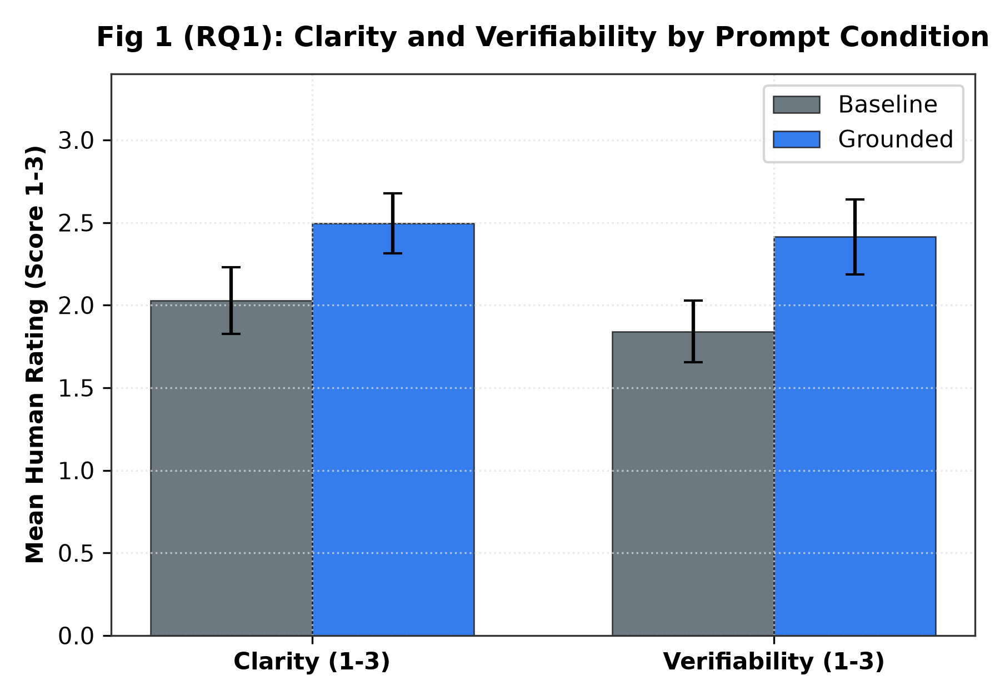
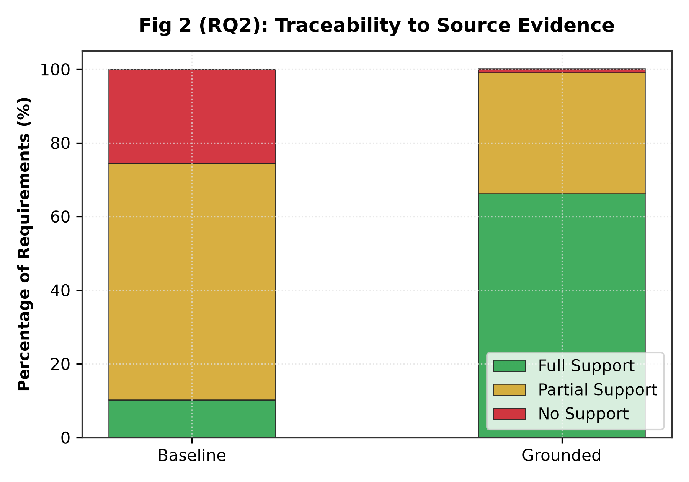
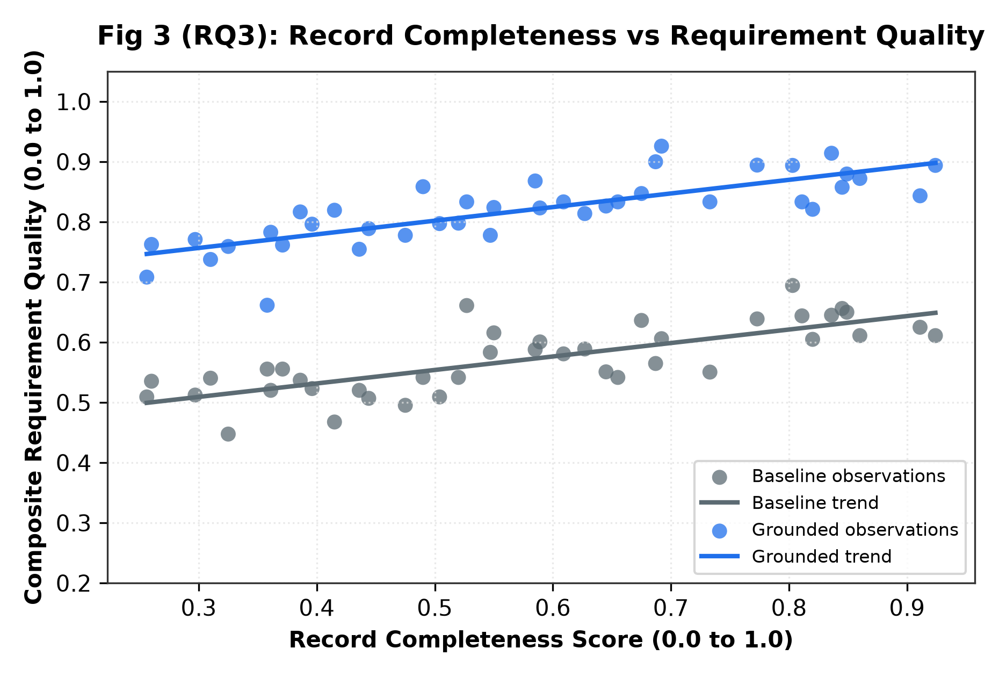
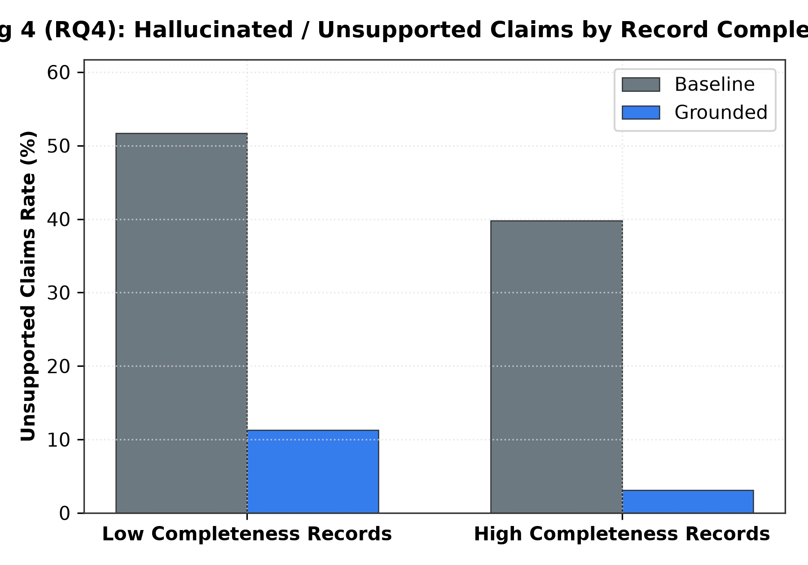

An empirical evaluation of the UK Algorithmic Transparency Recording Standard (ATRS) comparing Baseline vs. Evidence-Grounded prompting across 4 Research Questions.
| ID | Tool Name | Publisher / Department | Words | Section Coverage | Completeness Score | Stratum | Source Link |
|---|
Grounded requirements achieved significantly higher clarity (mean 2.50 vs 2.03) and testability (2.41 vs 1.84) with maximum effect size (r_rb = 1.00).
Baseline prompts produced 25.5% ungrounded claims (Tier 0). Grounded prompts reduced Tier 0 to 1.0% and achieved 66.3% Tier 2 direct evidence grounding.
More complete ATRS records produced significantly higher requirement quality (High: 0.860 vs Low: 0.779, p < 0.001, rho = 0.835).
Grounded prompting reduced unsupported additions from 46.3% down to 7.2% (paired Wilcoxon p < 0.001).




Is the requirement clear, unambiguous, and readable?
Can this requirement be objectively tested or verified?
Is the requirement grounded in source ATRS commitments?
Did the LLM invent features not in the source text?
Simply double-click run.bat. It auto-detects Python, auto-repairs virtual environments, auto-installs packages, and provides an interactive menu.
Make executable and run the bash launcher:
Works anywhere Python 3.10+ is installed:
Runs on any Mac, Linux, or Windows with Docker:
Open atrs_replication_notebook.ipynb in Google Colab or JupyterLab in any web browser.
Verify health of runtime, packages, datasets, and API keys: